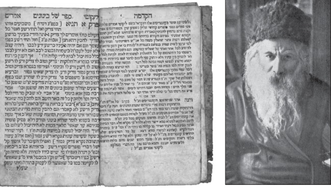

הוא… והנה מידת הבינוני היא מידת כל אדם…” רק לאחרונה למדנו את מילות המפתח הללו בש
הוא… והנה מידת הבינוני היא מידת כל אדם…” רק לאחרונה למדנו את מילות המפתח הללו בשיעור התניא היומי. מידתו של כל אדם היא להיות ‘בינוני’. המושג הבינוני הזה שאדמו”ר הזקן הפך אותו לאתגר–חיים רב–מעלה, לשאוף להגיע ל’בינוני’. זה לא אותו ‘בינוני’ שכל העולם מדבר עליו; זה ‘בינוני’, בהגיית ניקוד ציירה חסידית מוד
הוא… והנה מידת הבינוני היא מידת כל אדם…” רק לאחרונה למדנו את מילות המפתח הללו בשיעור התניא היומי. מידתו של כל אדם היא להיות ‘בינוני’. המושג הבינוני הזה שאדמו”ר הזקן הפך אותו לאתגר–חיים רב–מעלה, לשאוף להגיע ל’בינוני’. זה לא אותו ‘בינוני’ שכל העולם מדבר עליו; זה ‘בינוני’, בהגיית ניקוד ציירה חסידית מודגשת. כעת, רגע לפני שנמצא למסע אחר הבינוני החסידי, גלגלו אותה על לשונכם שוב ושוב, בהדגש המדויק.

מאבק תמידי
ספר התניא שכתב אותו בעל ההילולא, נועד לנו, הבינונים. לפחות אלו שבפוטנציאל יכולים וצריכים להיות כאלה. התביעה הבינונית של אדמו”ר הזקן כלל אינה בינונית. היא דורשת מיקסום של מאמץ אישי מול יצר הרע הפועם בלבו של כל אדם, תוך הכרעה ברורה. מאידך, הבינוני לא הגיע לשלב החטא כלל; הבינוני תמיד נאבק, תמיד מנצח; מלבד בזמן התפילה כאשר הוא מתבונן בגדלות הבורא, ואז הוא דומה לצדיק, שהרע כמו אינו נמצא כלל. דא עקא, שרגע לאחר סיום התפילה, שוב מתעורר היצר ומנסה ללא הצלחה למשוך את הבינוני לצדו.
אז הנה דוגמה מהיום יום: ואהבת לרעך כמוך. מי לא נכשל בה לפעמים?!… אמרת מילה לא מתאימה לחבר תוך כדי ויכוח, חשבת שלילי על פלוני, והנה כבר נפלת בהתמודדות. כי הבינוני אינו נכשל ולו במילה או מחשבה אחת, אף לא לרגע אחד. למרות שככל האדם, הבינוני חושק לפעמים לענות לפלוני שעה שהוא נפגע או נעלב. אבל אצל הבינוני המוח שליט על הלב, וכפי שמוחלט אצלו מראש, כך הוא נוהג כל העת.
בינוני עכשווי
פירושים וביאורים רבים נכתבו מאז יצא ספר התניא על מהות הבינוני, וכדי לרדת לפסים מעשיים ומתאימים לימינו אלה, ביקשנו משלושה חסידים העוסקים שנים רבות בהוראת ולימוד ספר התניא, להסביר ל’בית משיח’ מהו בינוני במבט עכשווי פתוח ובגובה העיניים.
לכל השלושה רזומה עשיר בלימוד ספר התניא ובהנחלתו לציבור של אלפים. הראשון הוא המשפיע הרב חיים לוי יצחק גינזבורג, מחבר סדרת הספרים “פניני התניא”, ובעצמו מוסר שיעורי תניא במשך עשרות שנים. השני הוא הרב אריק מלכיאלי, מרצה נודע שמפיק מדי יום קליפ–יומי ובו תובנה בתניא והוא מופץ לאלפים בכל סוגי המדיה. השלישי הוא הרב נדב כהן, מרצה ומחבר רב–המכר ‘מודעות יהודית - רעיונות בתניא בשפה בהירה ופשוטה’.
מה המהות של בינוני כפי שעולה מספר התניא?
הרב גיזנבורג: הבינוני הוא אדם רגיל - מאה אחוז. כלומר, אדם רגיל שמנצל את כל כוחותיו במאת האחוזים. הרי כל יהודי שומר מצוות אינו רוצה לעבור עבירות, וכאשר הוא מנצל את כל הכוחות שיש לו, הרי הוא שולט על כל מעשיו. הרי כל אחד מאתנו שולט על עצמו באופן מוחלט, לפחות בחלק מהמצוות, כך מי שעובד את עבודת השם שלו על פי הדרכתו של אדמו”ר הזקן בספר התניא, יכול להגיע לניצול מקסימלי של כוחותיו, ולהתגבר בכל פעם על הרע מבלי לחטוא בפועל.
זו הסיבה שאדמו”ר הזקן הבהיר כי ספר התניא שייך לכל אחד ואחד ולא רק ליחידי סגולה.
הרב מלכיאלי: לבושי הנפש של האדם, הינם סרים למשמעתו ולבחירתו של אדם. לבינוני יש נשמה רגילה, אך אם הוא מקפיד על לבושי הנפש - מחשבה דיבור ומעשה - אזי הוא נחשב לבינוני, כי אצל הבינוני הלבושים הרוחניים שלו נקיים ושלמים לחלוטין מבלי שעבר עבירות.
הרב כהן: למרות שיש לבינוני נפש הבהמית שמנסה להשתלט עליו, הרי הוא מצליח תמיד להתגבר עליו בשלושת הלבושים של מחשבה דיבור ומעשה. אך כדי להגיע ליכולת זו, יש להפנים את המשמעות של עבירה ומשמעות של מצוה, ובמקביל להפנים את היכולת לשליטה עצמית - מוח שליט על הלב מתוך קבלת עול בצורה מוחלטת. כמובן לצד הפנמות אלו, יש לעסוק באינטנסיביות בתפילה ובלימוד חסידות, ואז יהיה שינוי שיביא בכל פעם להתגברות הנפש האלוקית על הנפש הבהמית.
האם תוכלו להצביע על מישהו היום שהוא בינוני?
הרב כהן: מי? מורכב לענות…
הרב גיזנבורג: קשה מאוד להגיד. תלוי איך אדם חושב ומדבר, כל אחד לפעמים נופל בדברים קטנים, אי אפשר לבדוק כי מדובר בדברים פנימיים, דקים ועדינים.
הרב מלכיאלי: חסידים אשר שקועים באמת בלימוד תורה בכלל וחסידות בפרט.
האם זה מעשי לחסיד מן השורה להגיע לדרגת הבינוני של תניא?
הרב מלכיאלי: להיות בינוני מושלם, קשה מאוד להגיע, אבל אפשר להגיע להיות בינוני בתחום מסוים או בזמן ספציפי.
הרב כהן: יש היום הרבה חסידים שבמצוות מסויימות הם אפילו צדיקים. אם נתבונן רגע, לכל יהודי יש רובד מסוים שהוא ‘בינוני’, שאין לו אפילו מחשבה על כך. אפילו יהודים שאינם שומרי מצוות, הם אפילו לא מהרהרים על אפשרות של רציחה, למשל. אך זה לא מספיק כמובן, ויש לעשות מהפך בחיינו, שבכל רבדי החיים לא נחטא כלל, גם לא בפרטים הקטנים. זה אמנם קשה אבל אפשרי אם נעבוד ונתייגע על כך על פי הכוונת רבינו הזקן.
הרב גיזנבורג: כל אחד יכול להגיע לבינוני, אבל זה דורש עבודה ומיקסום של מאת האחוזים מהכשרונות ומהכוחות. יש לציין כי בשיחת פרשת אמור תנש”א, הרבי מתבטא שבגלל הכוחות המיוחדים שישנם לכל יהודי על סף הגאולה, כל יהודי יכול להגיע לדרגת צדיק. אם כן, בודאי שאפשר להגיע לדרגת בינוני.
בינונים בדורות האחרונים
האם היו חסידים בדורות האחרונים שהיו בדרגת ‘בינוני’? התשובה מורכבת מאוד, כי אין רשימה מסודרת של ‘בינונים’, אך יש חסידים שהעידו עליהם שהם בדרגה נעלית זו. חלקם מפי רבותינו וחלקם מפי חסידים.
לפנינו סקירה מיוחדת, על עבודתם הרוחנית של למעלה ממניין חסידים שנודעו כ’בינוני’.
• • •
סיפר המשפיע הרה”ח ר’ מענדל פוטרפס: לאדמו”ר מהר”ש היו כמה חסידים בדרגת ‘בינוני’ של תניא, ביניהם החסיד ר’ יעקב מרדכי בזפלוב והחסיד ר’ דוד צבי חן. שניהם היו בבחינת ‘בינוני המתפלל כל היום’ [דרגה הנעלית בבינוני - שנמצא כל היום כאילו הוא בתוך זמן התפילה, ואז הוא כעין צדיק]. באחת מההתוועדויות של אדמו”ר הריי”צ נ”ע, שאל אחד החסידים: ‘מה הבדל בין ר’ יעקב מרדכי ובין ר’ דוד צבי חן?’ השיב הרבי: “אצל ר’ דוד צבי העבודה היא ככה - והרבי הניע את שני בהונותיו מלמעלה למטה, ואילו אצל ר’ יעקב מרדכי העבודה היא ככה - והפעם החווה בשני בהונותיו מלמטה למעלה”.
ה’עובדים’ הבינו מיד למה היתה כוונת הרבי: שניהם היו שווים בעבודת התפילה שלהם, ושניהם האריכו מאוד בתפילתם, אלא שההכנה לתפילה של ר’ יעקב מרדכי ארכה חמש שעות וגם התפילה עצמה ארכה כחמש שעות. הוא היה משכים מידי לילה בחצות וממשיך בהכנות שלו לתפילה עד חמש לפנות בוקר. בשעה זו היה מתחיל להתפלל, ואחר כך ממשיך בתפילתו עד השעה עשר בבוקר. כלומר הספיק לסיים תפילת שחרית בזמנה.
ר’ דוד צבי לעומתו, היה מתחיל את ההכנות לתפילה בחמש בבוקר, מתמיד בכך עד השעה עשר, ורק אז פותח בתפילה עצמה. ומכאן, שלא הספיק לסיים את התפילה בזמנה….
מעניין לציין כי שני חסידים חשובים אלו זכו לקבל ‘סמיכה’ לרבנות בכתב יד קודשו של אדמו”ר המהר”ש.
מן הראוי לשרטט אי–אלו קווים על אישיותם של שני בינונים אלו:
הרב דוד צבי חן ע”ה היה רבה של צ’רניגוב (המכונה “הרד”צ”). הוא היה ידוע כאחד מגדולי רבני חב”ד. אדמו”ר ה’צמח צדק’ אמר כי הרד”צ הוא “עובד אלוקים”. על מהותו התבטא הרבי מה”מ: “בעל צורה, למדן גדול, ידע הרבה חסידות, ו’עובד’ ועוד כמה וכמה מעלות טובות” [תורת מנחם, חל”ד ע’ 170].
הרד”צ היה גאון עצום בתורת הנגלה ובתורת החסידות ולצד גאונות ומנהיגות, ניחן הרד”צ באהבת ישראל אמיתית כלפי כל יהודי באשר הוא. אהבת הזולת היתה אצלו ללא גבולות, וסבל הזולת היה מעורר בו התרגשות לעיתים עד בכי, ובשל כך פתח את ביתו ואורחים רבים מהם בלתי מוכרים, גדשו את ביתו וקיבלו כל טוב והאירוח נעשה במאור פנים ובאירוח אישי.
הנה קטעים מיוחדים מתוך דברים שכתב עליו בנו הרב אברהם חן. דברים אלו מסבירים את אישיותו של מי שהיה ‘בינוני’:
“חרד גדול בכל דקדוקי הדקדוקים עד למיצוי אחרון ומעשי גדול בעבודתו. עשרות שנים כמעט לא ישן בלילות. רגליו היו נתונות בצוננים… התענה וכו’ ואם יש אדם בדורות האחרונים, שיכול לזקוף את ידו ולומר: “מעולם לא נהניתי מעולם הזה באצבע קטנה, ודאי הוא.
“איתן זה לא היה בעולמו אפילו רגע אחד של הצגה, של כיוון כלפי חוץ, של משחק. שום עישוי, שום סלסול, שום זיוף קל, בדיבור, בקול, בעיניים, בשפתיים, בקמיטת מצח, בהסברת פנים. טבע היה. כולו טבע, אלא טבע קדוש, טבע עליון, טבע נשמה, טבע ולא זיוף ולכן אין קץ היה להשפעתו על כל. על כל מי שראה אותו או ישמע אותו, בין מישראל בין מאומות עד טפסרי הצאר וקומיסרי הבולשביקים. כולם לא עמדו כנגד טבעיות גדולתו. מקומו בעיקר היה שם, שם בסוף מערב הנשמה. לשם כיון את ליבו. משם היה ניזון ומשם היה מזין”.
הרב יעקב מרדכי בזפלוב, כיהן כרבה של פולטבה וידיד קרוב של אדמו”ר הרש”ב. עבודת ה’ של הרב בזפלוב היתה באופן של ‘מרה שחורה’, והרבי הרש”ב עודדו לצאת מעבודה בדרך זו ולהתחיל לעבוד את ה’ בשמחה: “ירחק את עצמו מן מרה שחורה ועצבות עד קצה האחרון, והתפילה ותלמוד תורה צריך להיות בשמחה דווקא. וזה כל האדם לייגע את עצמו לעבוד את ה’ בזריזות הנמשכת משמחה ופתיחות הלב. ואז יוכל לנצח את הנפש הבהמית כו’ וילמוד היטב בספר של בינונים מפרק כ”ה עד פרק לו” (אגרות קודש אדמו”ר הרש”ב חלק א’ עמוד לד).
עבודת ה’ שלו נעשתה מתוך סיגופים. מספרים שלפני פטירתו אמר: “שלושים שנה ישנתי על ספסל, אבל פעם אחת של הנחת תפילין יקרה יותר מהשינה על הספסל במשך שלושים שנה”. במקום אחר מופיעה גרסה קצת שונה: שר’ יעקב מרדכי אמר שטעה בגישת הסיגופים שלא לישון במיטה, משום שפעם אחת של הנחת תפילין יקרה יותר משלושים שנה של הימנעות מלישון במיטה. ועל כך אמרו חסידים: כדי לחוש את היוקר שבהנחת תפילין במידה שהרב בזפלוב חש זאת, צריכים לפני כן לישון על ספסל במשך שלושים שנה…
עובדי ה’ ובינונים
ר’ ישראל איסר גוטין, תלמיד ‘תומכי תמימים’ בליובאוויטש מספר שבישיבה אמרו שרק שניים הגיעו למידת ה’בינוני’: אברהם דוד מקלימוביץ [פויזנר], ואיצ’ה מתמיד. [יש לציין, כי להלן נביא עוד תלמידים בישיבה שאמרו עליהם כי הנם ‘בינונים’, אך יתכן ור’ ישראל–איסר דיבר על תקופת לימודיו - ש.ז.ב.].
הרב אברהם דוד פויזנר ע”ה
פניו של ר’ אברהם דוד מקלימוביץ הביעו תמיד התאפקות והינזרות, וכמי שנמצא במצב הכן להיאבק לא רק נגד עשיית רע בפועל, אלא גם נגד הרהורים רעים. מעולם לא ראו אותו יושב בטל. אם היה לו זמן פנוי היה עוסק בתורה. גם בהתוועדויות חסידיות היה מדבר רק על יראת שמים ואהבת הבורא”.
הרב אברהם דוד היה בעל כשרונות נעלים, בעל מידות עדינות, נחשב לירא שמים במיוחד, מקפיד על חומרות רבות באופן מיוחד. מחשובי ה’חוזרים’ בליובאוויטש, ובתפקידו זה נכנס תדיר וללא הכנה לחדר היחידות של אדמו”ר הרש”ב. אף היה נחשב ל’עובד’ גדול. כאשר אדמו”ר הרש”ב הוציא את קונטרס התפילה, שאלו המשפיע הנודע הרשב”ץ, עבור מי כתב את אות א’ של הקונטרס (שם מדובר על דרגות נעלות) השיב לו הרבי: “עבור אברהם דוד”…
המשפיע הרב שמואל לויטין הוסיף וסיפר על דמותו: “ר’ אברהם דוד ז”ל היה נוהג להתפלל בעמידה. בשעת התפילה עיניו היו פקוחות, אך הוא לא ראה כלל מה נעשה סביבו. הוא היה מסוגל לעמוד כך שעות ארוכות ולהתבונן בענייני התפילה, כאשר הוא מנותק לחלוטין מכל ענייני העולם. העומד מן הצד לא היה יכול להבחין בכך שהוא שקוע בהתבוננות עמוקה. הסימן היחיד שהעיד על כך היה כובעו השמוט על הצד”.
הרב יהושע ליין הי”ד
מנהל ‘תומכי תמימים’ בדוקשיץ, רב באוסטרובנה, בישנקוביץ ורודניה. בכל המקומות הללו לימד תורה במסירות נפש. נחשב ל’עובד’ ובעל כשרונות נעלים, במיוחד הצטיין בזכרון נפלא. אדמו”ר הריי”צ אמר עליו שהוא בדרגת בינוני של תניא.
הרב איצ’ה מתמיד (הורביץ) הי”ד
שד”ר רבותינו נשיאינו בארצות הברית ובאירופה. נחשב למופשט מענייני עולם הזה, ונהג בחומרות רבות וייחודיות. הוא מפורסם בעבודת התפילה שלו וביראת השמיים המיוחדת והמופלגת שלו. גם עליו אמרו עליו שהוא בדרגת ‘בינוני של תניא’. בספר תולדותיו ‘יראת ה’ אוצרו’ מסופר: “תלמידיו של המשפיע הרה”ח ר’ שלמה חיים קסלמן ז”ל סיפרו, שכשהיה מלמד אותם בספר התניא על מדרגת ה’בינוני’, היה אומר: ‘אתם לומדים על מדרגת ה’בינוני’ מתוך הספר; אנחנו הכרנו יהודים שהיו במדרגת ה’בינוני’ - ר’ איצ’ה מתמיד לדוגמה”…
הרב אריה לייב שיינין הי”ד
רב בעיר דוקשיץ. בליובאוויטש וחייליה נכתב עליו: “מפורסם על דבר התפילה שלו. אדמו”ר הרש”ב אמר עליו כל ‘תומכי תמימים’ כדאי בשביל לייבע בלבד, והשאר זה רווח נקי. אמרו עליו שהוא בדרגת בינוני”. לפי נוסח אחר, הרבי הרש”ב אמר שלייבע הוא בינוני של ספר התניא”.
הרב שיינין היה מפורסם בקרב החסידים, בהתעלותו בענייני עולם הזה עד כדי אי התמצאות מוחלטת בענייני עולם הזה. על תפילתו סיפר ר’ ניסן גורדון: “הרב שיינין היה נשאר כל בוקר אחר התפילה, יושב בפינתו ליד ארון הקודש, ושקוע שעות רבות בעבודת התפילה. לעיתים רחוקות ביותר היתה נשמעת מילה או תנועה מן הפינה; תכופות היתה הדממה בבית הכנסת נקרעת על ידי חריקת שיניים שבאה מתחת לטלית”.
הרב זאב וולף ברונשטיין ע”ה
חסידים מספרים שאדמו”ר הרש”ב אמר עליו שהוא בדרגת ‘בינוני’ שבספר התניא. בין החסידים היו שכינו אותו ‘המלאך’ או ‘הנסתר’ על שם הנהגתו השמיימית. במשך תקופה ארוכה שהה בליובאוויטש בצלו של אדמו”ר הרש”ב. המשפיע הרב שאול ברוק העיד עליו שהיה עומד כל היום ומתפלל, ומרוב תעניות ומיעוט אכילה, נשרו שיניו. נשלח על ידי אדמו”ר הרש”ב לעיר צ’רקס.
הרב דוד הורודוקער (קיבמן) ע”ה
היה רב בוויעטקא. חסידים אמרו עליו שהוא בינוני. אדמו”ר הרש”ב אמר עליו אשר היה כדאי לייסד ‘תומכי תמימים’ רק בשבילו. עסק בתורה ועבודת ה’ יומם ולילה נחשב למופשט מענייני עולם הזה, וידוע בחומרות מיוחדות עליהן הקפיד גם בשנים בהם נדד בגין רדיפות הקומוניסטים והכיבוש הנאצי.
בביטאון חב”ד מסופר על עבודת ה’ הייחודית שלו כפי שהחלה בימי שבתו בליובאוויטש: נהג להעמיק בתורת החסידות, תוך כדי התנתקות מוחלטת מהסובב אותו. היה מתפלל שעות רבות ושקוע בתפילתו מבלי לחוש במתרחש לידו. במהלך עבודתו זו לא נראו ממנו כל תנועות חיצוניות ועיניו היו פקוחות כאילו הוא מסתכל בנקודה מסויימת מולו.
בשם אדמו”ר הרש”ב מוזכרים מספר ביטויים אודות ר’ דוד הורודוקער; יש אומרים שהביטוי היה שדוד הוא ‘בינוני של תניא’, אחרים אומרים שהביטוי היה: ‘דוד מסוגל לתת דין וחשבון על כל מחשבה, דיבור ומעשה שלו’.
הרב חיים משה אלפרוביץ ע”ה
חסידים אמרו עליו שהוא בינוני. הרבי מה”מ אישר לכתוב על מצבת הרב אלפרוביץ את הנוסח הבא: “היה זהיר במחשבה, דיבור ומעשה כל ימי חייו”. ברוסיה עבד לפרנסתו כשוחט, ובארץ ישראל עבד במפעלי ים המלח. מאז שעלה לארץ הקודש, עסק בהרבצת תורה בחוגים שונים ונחשב למשפיע חסידי. כל ימיו היה שקוע בלימוד תורה וחסידות, וענייני עולם הזה לא תפסו אצלו מקום, כפי שסיפר ר’ מענדל פוטרפס, כי בעת שהצאר הודח מהשלטון, שאל ר’ חיים משה - מהיכן נוכל להביא דוגמא לספירת המלכות?! ור’ מענדל הוסיף וביאר, כיצד המהפכה לא תפסה אצלו מקום, ובמוחו ניקרה רק בעיה אחת - איך נסביר את ספירת המלכות.
חתנו ר’ זלמן דרורי סיפר: “שמעתי פעם מחותני דבר שאמר כבדרך אגב, ובכל זאת מיצה את מהותו: ‘מילא בדיבור יכול להיות שאדם ייכשל, שאם חברו מדבר עמו והוא עונה אזי יתכן כשלון בדיבור. אבל במחשבה - הרי שם רק אני בעל הבית, הרי אני יכול למשול על המחשבה כל הזמן’”…
הרב ניסן נעמנוב ע”ה
משפיע ומנהל בישיבות תומכי תמימים בנעוועל, לנינגרד, סמרקנד ובמשך עשרות שנים בברינואה. חסידים אמרו עליו שהוא בינוני. ר’ ניסן היה ידוע שאין לו בעולמו אלא תורה וחסידות, ונהג כלפי עצמו וכלפי אחרים בשיטה של קבלת עול מוחלטת.
הרב ישראל נח הגדול (בליניצקי) ע”ה
מנהל, משפיע וחבר הנהלה בישיבות ‘תומכי תמימים’ בקרמנצ’וג, סמרקנד ובראנואה. פעם אמר אדמו”ר הרש”ב לר’ ישראל נח בצעירותו: “צייטנווייס ביזטו א בינוני” - כלומר - ‘לעיתים אתה בינוני’. על העבודה הפנימית שלו העידו רבותינו נשיאינו.
אדמו”ר הרש”ב אמר עליו: “גם כאשר הוא יושב לבדו בחדר, יש לו פחד מהקדוש ברוך הוא”. ואילו אדמו”ר הריי”צ התבטא אודותיו: “אינו שייך כלל לחפוץ לנגוע באיש יהיה מי שיהיה, ובפרט באלו שיש לנו תקווה בהם אשר בעזרתו יתברך, יהיה לעיניים בענייני חיזוק לימוד התורה”.
ר’ מנחם מענדל הלל גנזבורג הי”ד מהאדיטש
סיפר הרה”ח ר’ צמח גורביץ: “אבא [הרה”ת ר’ איצ’ה מתמיד] היה מרבה לבקר בהאדיטש כדי להתפלל על ציון אדמו”ר הזקן, ובדרך כלל היה סועד אצל משפחת גנזבורג. אבא העריך עד מאוד את ראש המשפחה ר’ מנחם מענדל הלל, ופעם אמר לי: ‘לולא דמסתפינא [אילולא הייתי חושש] הייתי אומר שר’ מנחם מענדל הלל גנזבורג הוא בינוני על פי תניא’.
ר’ מנחם מענדל הלל, התגורר רוב שנותיו בהאדיטש, והיה כל היום שקוע בלימוד ותפילה.
מקורות: תניא, ליובאוויטש וחייליה, המשפיע ר’ שלמה חיים קסלמן, יראת ה’ אוצרו, אבני חן, ישראל נח הגדול, חסידים הראשונים ח”ב, זכרון לבני ישראל, ר’ ניסן, ביטאון חב”ד, בכרם חב”ד, אלגעמינער זשורנאל, בית משיח, תשורה אלפרוביץ–אוירכמן.